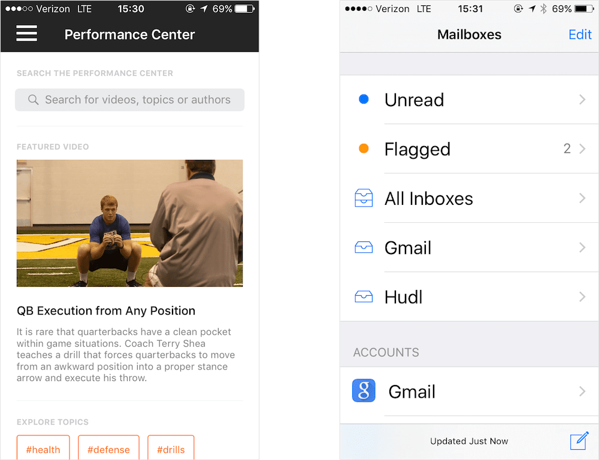

Design Details: TypographyUsing typography to clarify Hudl's mobile app accessibility |
Design Details: TypographyUsing typography to clarify Hudl's mobile app accessibility |
| Overview |
|---|
|
I work on messaging tools at Hudl. You can read more on the process of creating those tools here. During the user research process, I discovered that the typography in the Hudl iOS app hindered the users’ experience because it was too small to read. Observing our users in-person helped me understand that our users need flexible typography. This insight helped me form two guidelines for Hudl's mobile UI. |
| What did I observe? |
|---|
|
Our team visited a high school basketball coach to observe how he used Hudl. He’s an active user of the Hudl product - looking at his metrics alone, one might think that he doesn’t have any issues using our product. However, the trip revealed that we weren't appropriately displaying typography in the app. Let’s compare the following two screens: On the left is a sample screen from the iOS app. Clearly, the UI deviates from the iOS Human Interface guidelines in two ways:

On the right is how this coach actually uses his device. When we looked at how this coach was reading his email, his font size was increased to the max. We weren’t taking advantage of iOS Dynamic Type, an OS-level feature that allows the user to make the font size larger or smaller. Our app didn't allow the coach to read text the way he wanted to! This anecdote was affirmed through several other on-site visits. Once we understood that a fair number of the coaches that were using the apps were older males that needed visual assistance, we knew we needed to alter the UI. |
| Guidelines |
|---|
|
The first change was to create a typographic hierachy and take advantage of iOS Dynamic Type. On the left is iOS (font: SF UI Text) and on the right is Android (font: Roboto).  Even with a hierarchy, typography by itself isn’t enough. There still needs to be an underlying principle that unifies the way our apps look. The second change was to align the hierarchy to a unified baseline grid. The baseline grid is set at 4dp. It had to be an even number that was common enough to accommodate multiple screen densities.  Put together, the result is an iOS app that is easier to read with a more consistent UI. Taking advantage of Dynamic Type allows the app to accommodate each user's visual needs. The following is a reference design used for the messaging feature. Each piece of the UI has been turned into a reusable component that is aligned to this 4pt grid. |